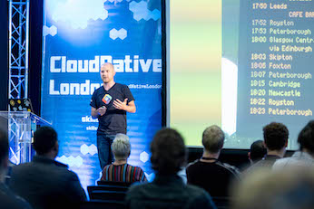
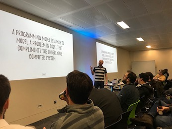
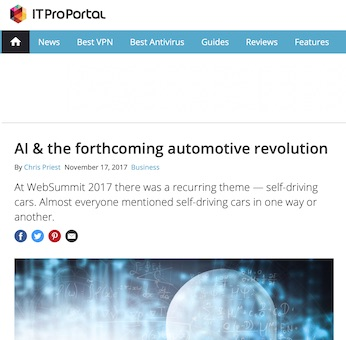
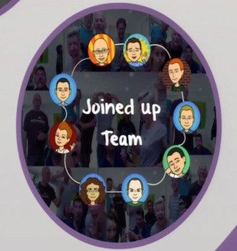

30th January 2019 - Alternative Ways To Think About Serverless @ NDC London
There are many definitions of serverless available, including one of my own! In this lightening talk I examine my favourite ones, discuss alternative ways to think about serverless technologies, and how this alternative thinking may change the approach to your next project. I explore some useful analogies, and a technique for identifying if a serverless architecture is right for your project, driven by hard data.
26th September 2018 - If I Had A Time Machine: Three Things I Wish I’d Known Before My First Cloud Project @ Cloud Native
Cloud projects can require a different approach to conventional on-prem projects. These differences are often subtle and do not become apparent until it is too difficult or too expensive to change course. These differences can vary from architectural design, decisions around the services you use, and sometimes even just setting the right expectations with your users or stakeholders. Until time machines are invented (and Chris can go back and give this talk to himself), he will share his top three lessons learnt from nearly a decade of building cloud-based systems, taking you through the practical steps you can take to avoid the same pitfalls. Avoid learning these lessons the hard way!
10th May 2018 - The Future of Cloud Applications in a Hybrid World @ AWS Summit
A live panel discussion with experts to learn the latest trends, technologies and future predictions for hybrid cloud infrastructures. Covering the future of data services for hybrid cloud platforms, how to modernize your IT architecture, why a one-size-fits-all-approach doesn't work for hybrid cloud platforms, where managed hosting and managed services fit into your cloud strategy and the latest trends in multi-cloud and what it means for enterprise applications
19th April 2018 - Microservices in Business: The Pros & Cons for your IT Architecture
The use of microservice architectures has exploded over the past couple years, but does that mean they are right for every business? When it comes to building a business case for containers and microservices, how do you determine whether or not this model is the right fit for your organization?
8th March 2018 - Serverless MapReduce with .NET @ London .NET User Group
"Big data" and MapReduce can often appear to be scary models that only those with Linux & Java skills, and a large budget for a server cluster, can fully understand, let alone leverage. This needn't be the case! Do you want to process huge amounts of data (e.g. server logs) in a scalable & parallel fashion, while using your favourite tool set? Do you want to ask some questions of an interesting data set, but you feel limited to RDMS & NoSQL? Do you feel that, just because .NET is your language of choice, that you are a second-class (programming) citizen when it comes to available MapReduce tools? In this talk I discuss the pros and cons of leveraging the MapReduce programming model in a serverless cloud environment with .NET, and show a real world example -- from architecture right down to the code.
17th November 2017 - AI & The Forthcoming Automotive Revolution
At WebSummit 2017 there was a recurring theme — self-driving cars. Almost every talk I went to — whether at Centre Stage, SaaS Monster or AutoTech — mentioned self-driving cars in one way or another.
But who came out on top? I analyse the major players, and how their approaches differ
22nd November 2013 - Successful Collaboration and MOFF - Applied @ P3X
In this talk Jenny Martin, Chris Priest and Pete Buckney (The Sparkle Team) share their experience on a government-funded R&D retail project with Sparkle CS and their application of BDD and agile testing techniques. The talk will explore how using lean principles with a laser focus on maximising opportunities for feedback (MOFF) rather than on a minimal viable product (MVP) a team can accelerate delivery and respond quickly to constantly changing market pressures.